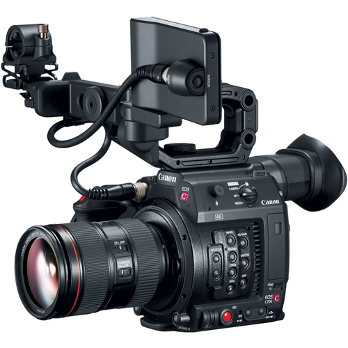
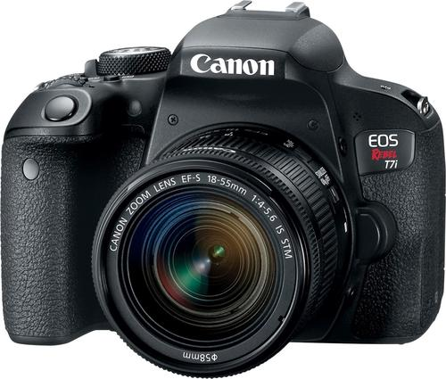
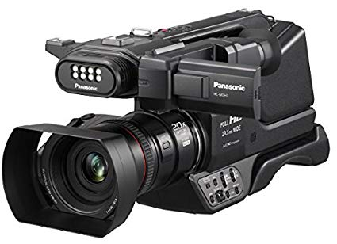
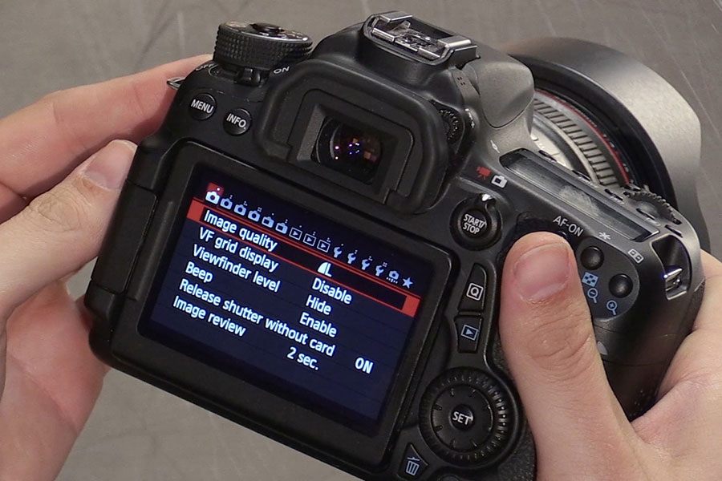

The Camera
The importance of Cameras in life
Camera or camera is a camera for still or moving images (video). Several lenses are installed in the camera. And the first description of the camera in Ibn al-Haytham

History of cameras
The forerunner to the photographic camera was the camera obscura. Camera obscura (Latin for "dark room") is the natural phenomenon that occurs when an image of a scene at the other side of a screen (or for instance a wall) is projected through a small hole in that screen image and forms an inserted image (left to right and upside down) on a surface opposite to the opening. The oldest known record of this principle is a description by Han Chinese philosopher Mozi (ca. 470 to ca. 391 BC). Mozi correctly asserted the camera obscura image is inverted because light travels inside the camera straight lines from its source. In the 11th century, Arab physicist Ibn al-Haytham (Alhazen) wrote very important essays about the camera obscura, including experiments with light through a small opening in a darkened room. Ibn al-Haytam's writings on optics became very influential in Europe through Latin translations, inspiring people such as Witelo, John Peckham, Roger Bacon, Leonardo Da Vinci, René Descartes and Johannes Kepler. Further information: Hockney-Falco thesis The use of a lens in the opening of a wall or closed window shutter of a darkened room to project images used as a drawing aid has been traced back to circa 1550. Since the late 17th century, portable camera obscura devices in premises and boxes were used as a drawing aid.
Digital camera
The first camera using digital electronics to capture and store images was developed by Kodak engineer Steven Sasson in 1975. He used a charge-coupled device (CCD) provided by Fairchild Semiconductor, which provided only 0.01 megapixels to capture images. Sasson combined the CCD device with movie camera parts to create a digital camera that saved black and white images onto a cassette tape. The images were then read from the cassette and viewed on a TV monitor. Later, cassette tapes were replaced by flash memory. In 1986, Japanese company Nikon introduced an analog-recording electronic single-lens reflex camera, the Nikon SVC. The first full-frame digital SLR cameras were developed in Japan from around 2000 to 2002: the MZ-D by Pentax, the N Digital by Contax's Japanese R6D team, and the EOS-1Ds by Canon. Gradually in the 2000s, the full-frame DSLR became the dominant camera type for professional photography.




khaled Ez Alddin
Lebanon
(+961)76.584749 - khaledezzeden2000@gmail.com